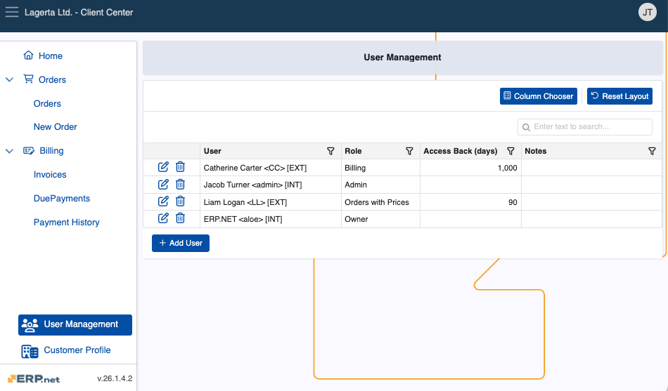
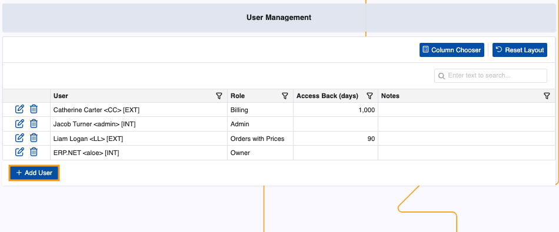
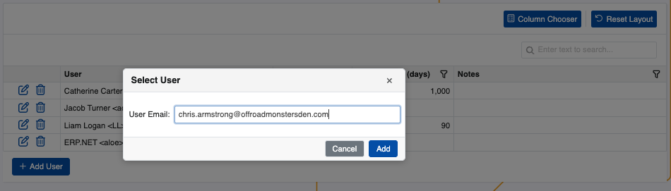
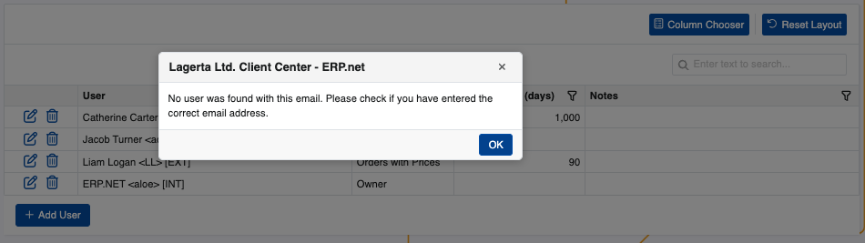
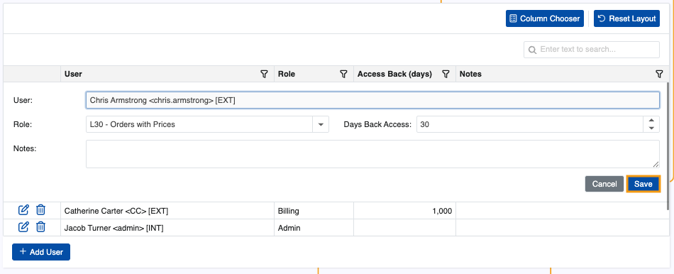
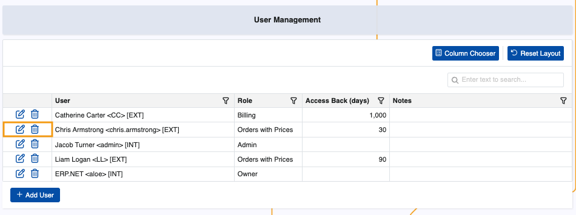
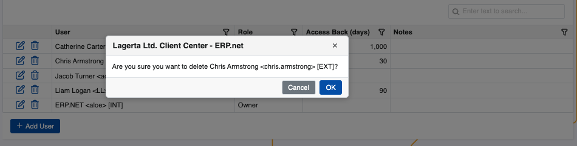

User Management
The User Management page is an administrative hub for a customers' users in the Client Center. It is an alternative to the standard way of setting up external customer access and allows customers' individual users to see exactly what they need once they log into the platform.
The page is visible to all Client Center users with external access role L80 - Admin and above.

Details
You can find the following information about each user in the table:
- User - Name of the user in the format {Name} <{Login}> [{UserType:DB}] as defined in Systems.Security.Users.
- Role - External access role of the user. Each subsequent role in the includes the rights granted by the previous.
- Access Back (days) - The maximum number of past days the user is allowed to view data to which their role grants them access.
- Notes - Optional notes for the user.
Add user
Admins and Owners can add any already registered external and internal user from within their organization into the Client Center.
To begin, click Add User.

This will trigger a window where you need to provide the user's email address.

If no email record is found, you will get an error.

Proceed to fill out necessary Days Back Access and Role fields. The name will be filled out automatically.
When done, click Save.

The new user will be added to the table.
Actions
You can change any of the details of an existing user with the help of the Edit button.
Alternatively, you may remove a user's access to the Client Center with the Delete button.

This action will only revoke the external access, not delete the actual user.
